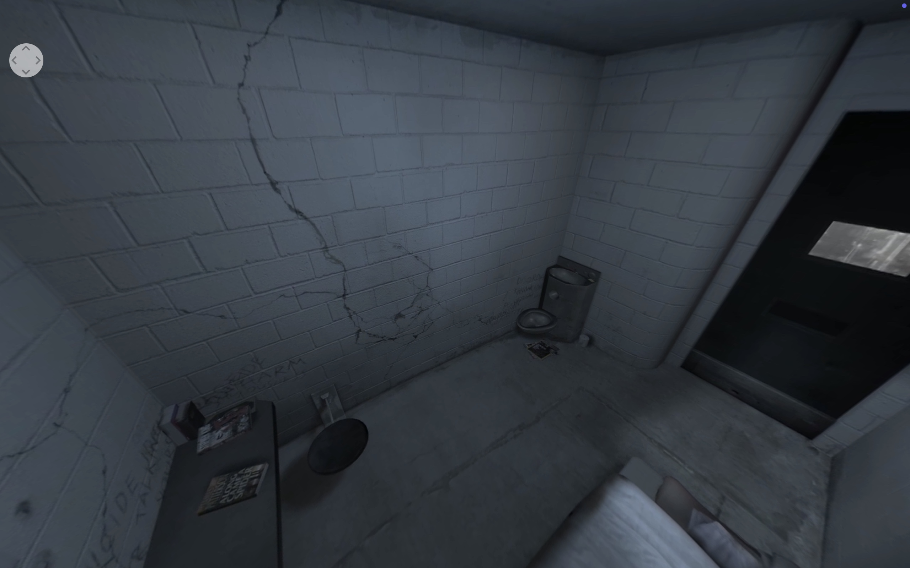
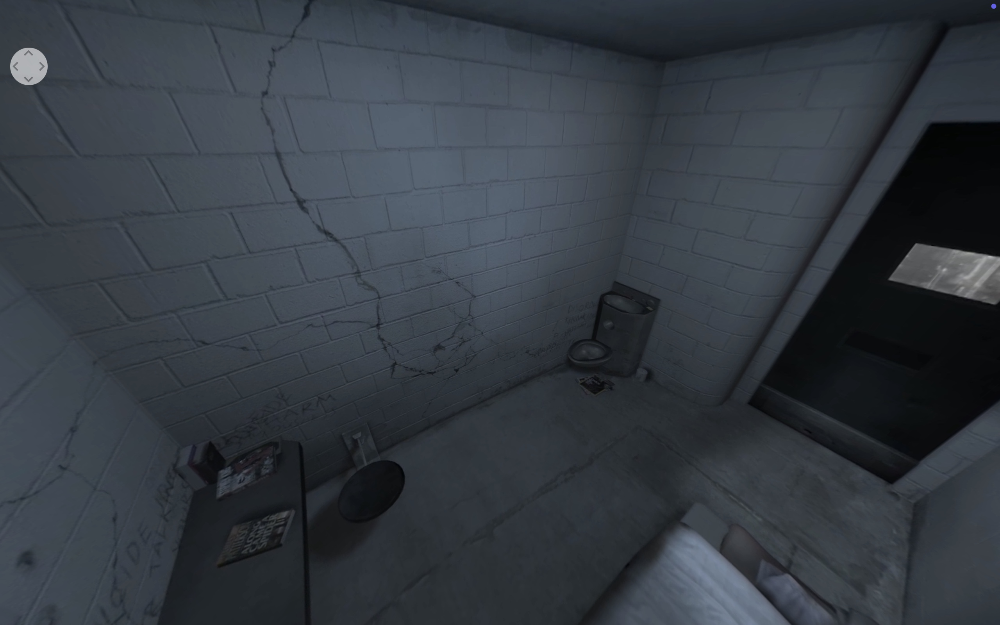
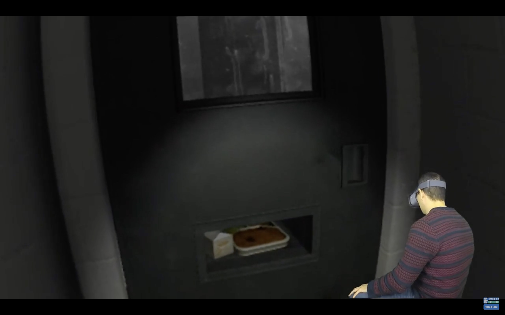
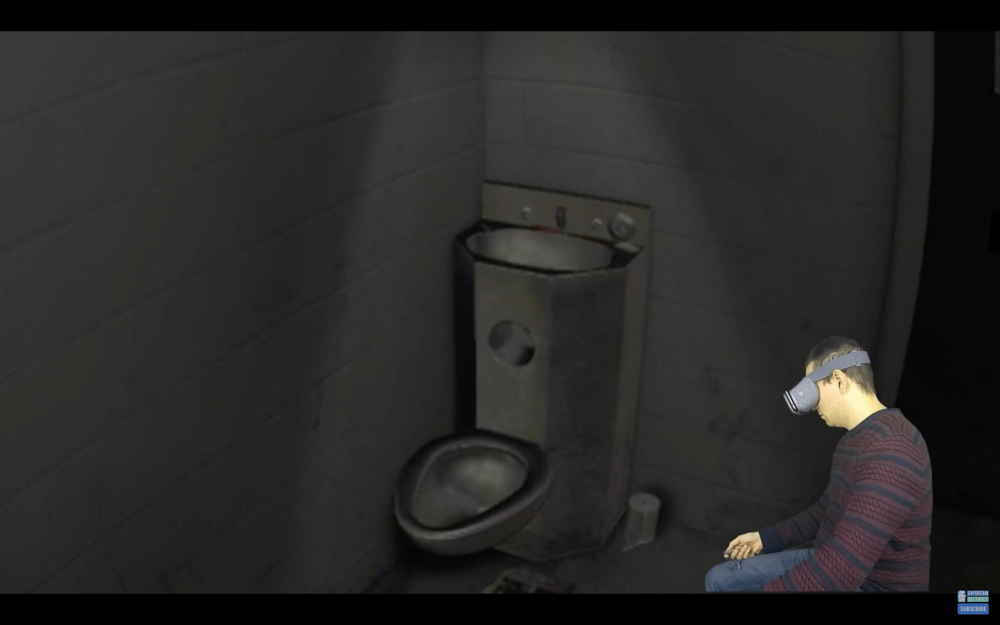
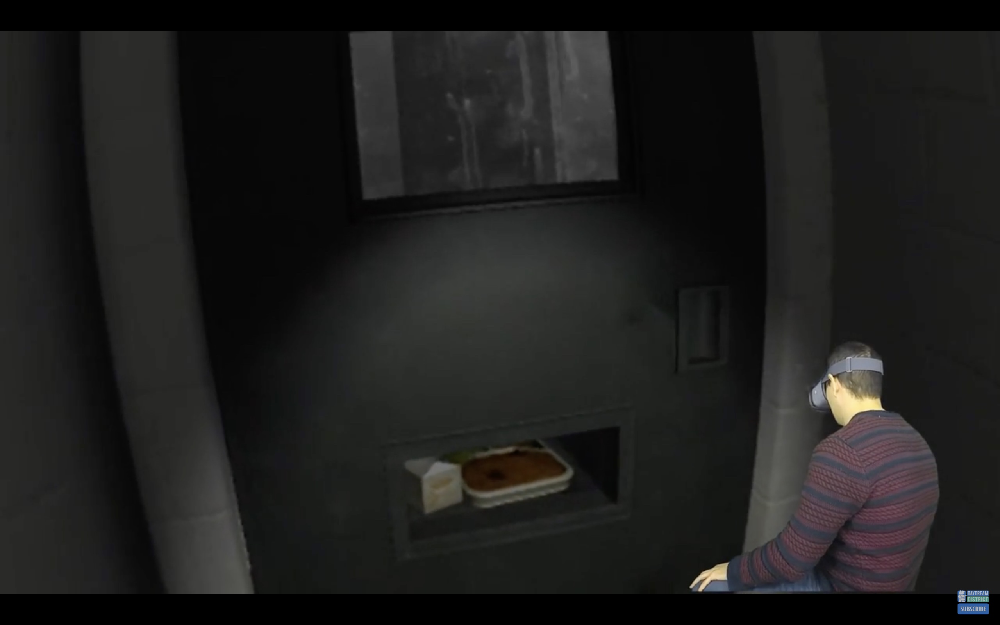
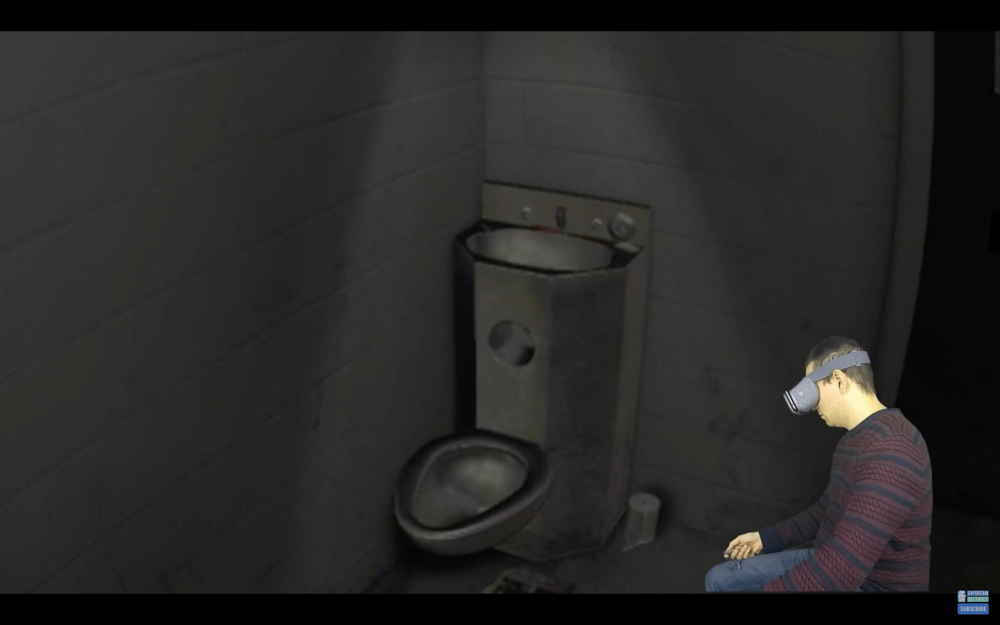

Interactive Experience Sheet
Experience Video
Analysis
La experiencia combina elementos 3D generados con entornos realistas de una pequeña celda.
Se presenta en primera persona, haciendo que el usuario viva la experiencia como protagonista.


El relato es lineal: seguimos la rutina del prisionero dentro de la celda paso a paso.
 


El usuario puede explorar la celda, interactuar con objetos y escuchar sonidos diegéticos del entorno.
 



Sonido ambiental y diálogos de ex-prisioneros refuerzan la inmersión y la atmósfera emocional.


El usuario es el protagonista, viviendo la experiencia en primera persona dentro de la celda.